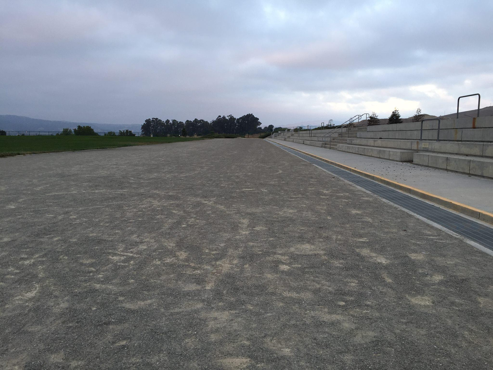
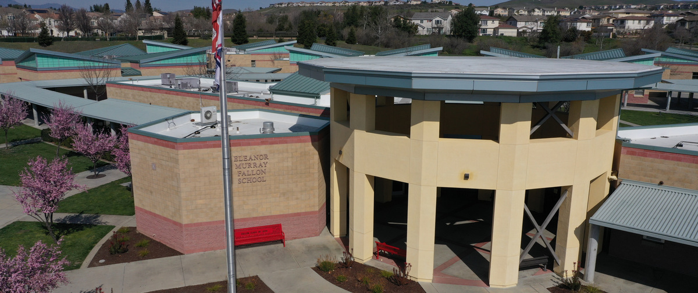

Life at School

A classroom
This was built in 2005.
The classrooms hold up about 30 students with one teacher. They often feature decorations howing what subject is taught there. Math teachers decorate their classrooms with number lines and other math themed decorations, and history classrooms feature history and so on.

The track
This was built in 2005.
The track is used for run days where the P.E. students may run a mile or a two mile or on days with free time, simply walk it while chatting with their friends.

The rotunda
This was built in 2005.
The rotunda is a central point. Students can access the office and the corridors to the health office, ASB, library, and other buildings from here. They also meet here after school while waiting to be picked up.